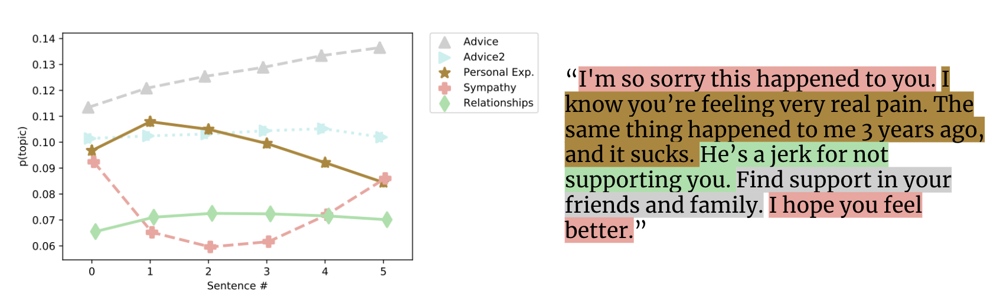
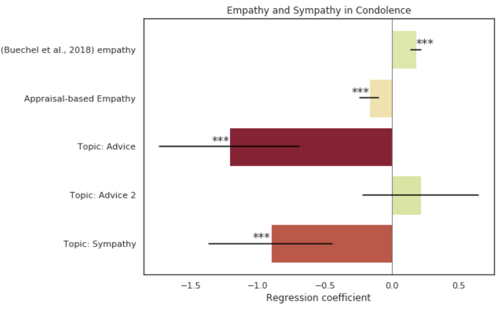
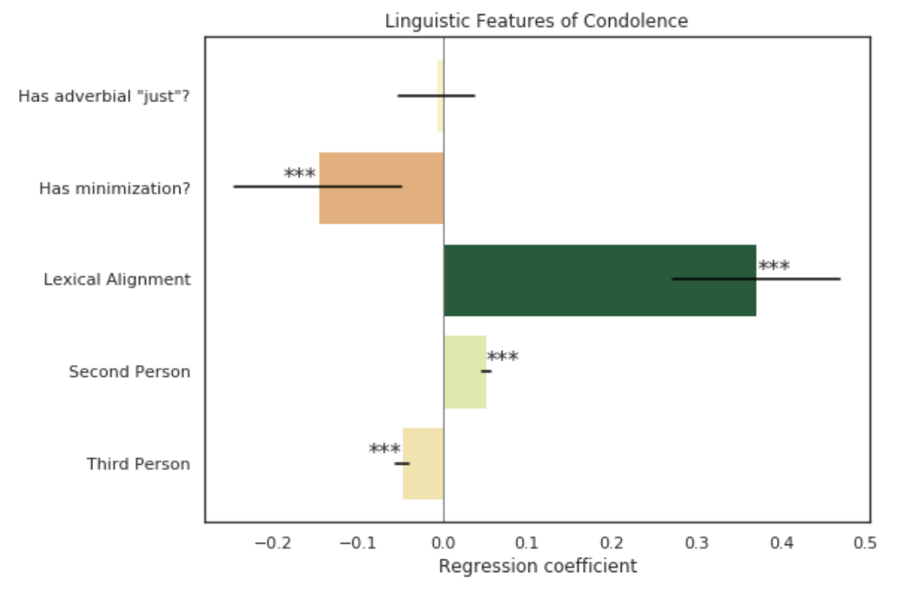

Condolence and Empathy in Online Communities
Introduction
I'm so sorry... I don't know what to say.
In times of distress, we frequently go online to seek social support and condolence. But effectively providing that support to others is easier said than done. This study aims to computationally identify mechanisms and strategies for delivering effective and impactful condolence on social media.
We offer the following three contributions.
- We introduce a new massive dataset of 11.4M public expressions of distress and 2.8M of condolence labeled using two deep learning models.
- Using an analysis of 11.4M expressions of distress, we demonstrate that the community selectively engages in condolence.
- We introduce a new dataset and model for identifying empathy in condolences and, using the empathy estimates, find that distressed individuals less frequently offer gratitude for deeply empathetic condolences and instead prefer compassionate, positive messages.
Code and Models
Data is available to researchers by email request. Code and models are available here.
Pre-trained BERT-based classifiers for condolence and distress speech, as well as a RoBERTa-based model for empathy are available as a pip package. The code is available on Github.
pip install condolence-models
Some Highlights
Condolences have a sympathy sandwich.
If we look at topic distributions across sentences of a condolence, the first and last sentences are likelier to be sympathetic, while the middle is likelier to be advice or personal experience. 
Some types of empathy work better online than others.
Our appraisal-based empathy is negatively correlated with a good condolence, but a different measure of empathy which mixes in the concept of compassion is positively correlated. Full regression results can be found in the paper. 
Either way, refrain from trite sympathy or advice-giving.
Phrases like "sorry for your loss" or "thoughts and prayers" do not a good condolence make. Neither does advice giving.
Try lexical alignment and person-centering instead.
Individuals can mirror the language as a way of decreasing social distance which can increase trust. This alignment, as well as the usage of second person to center the story on the distressed individual, are positively correlated with good condolences. 
What else?
How did we measure "good" condolences? How do we effectively express distress to receive social support? How do we detect empathy? When do distress and condolences co-occur, and when don't they? All of these questions, and more, are answered in the paper!
Citing
@inproceedings{zhou2020condolence,
title={Condolence and Empathy in Online Communities},
author={Zhou, Naitian and Jurgens, David},
booktitle={Proceedings of the Conference on Empirical Methods in Natural Language Processing (EMNLP)},
year={2020}
}